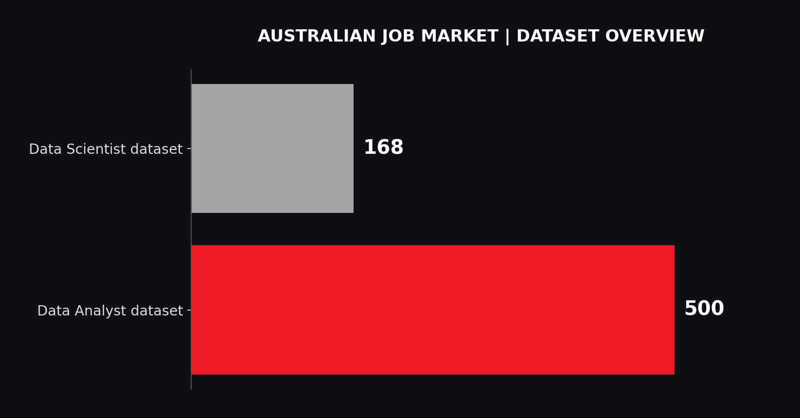
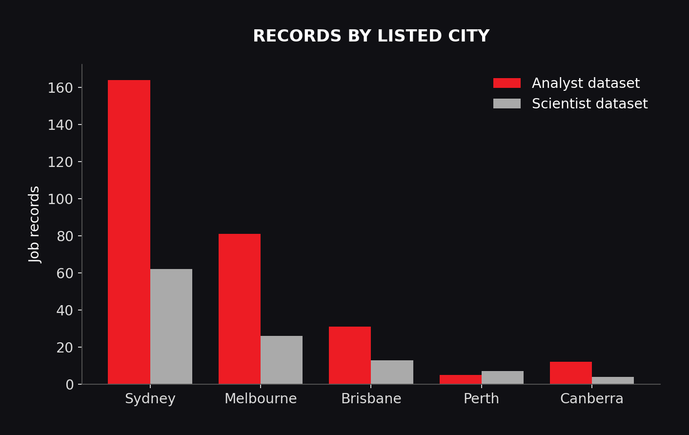
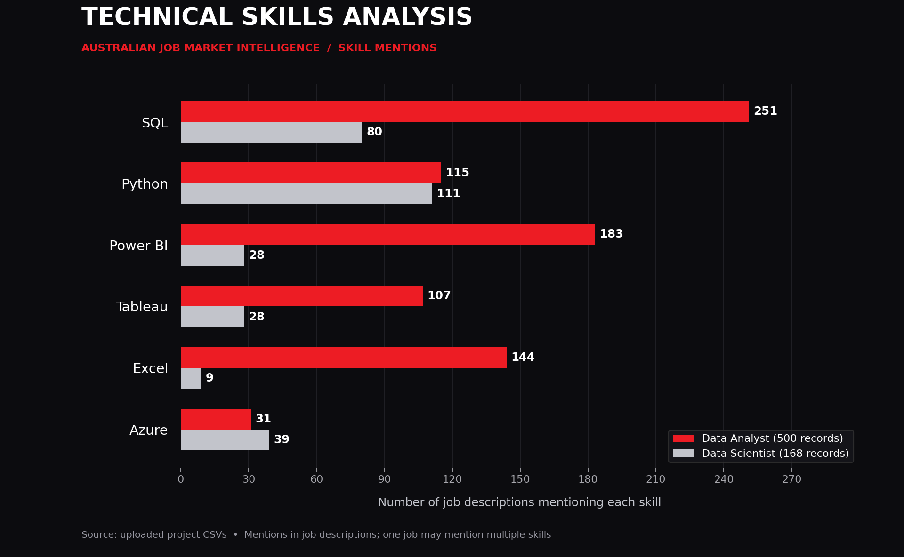

AUG 2024 — PRESENT
AdventHealth
Senior Data Analyst
Healthcare analytics, SQL data validation, KPI reporting, dashboard development and stakeholder insights.
01 / THE DATA RACING GARAGE
Turning raw data into powerful insights. Building smarter decisions through analytics, visualization and technology.
02 / DRIVER PROFILE
I'm a Data Analyst with around five years of experience in business intelligence, reporting, analytics and data visualization across healthcare, fintech and enterprise environments.
I use SQL, Python, Power BI, Tableau and cloud technologies to turn complex datasets into meaningful insights and better business decisions.
03 / RACING ENGINE
04 / TRACK RECORD
Healthcare analytics, SQL data validation, KPI reporting, dashboard development and stakeholder insights.
Data analysis, AI-related reporting, dashboard development and operational insights.
Data cleaning, exploratory analysis, reporting and visualization.
05 / FEATURED PROJECTS
Analyzing 668 Australian job records to compare Data Analyst and Data Scientist roles, technical skills and location-based hiring trends.
VIEW PROJECT ON GITHUB ↗
Job records across the two career categories.

Geographical patterns in the job market.

Comparing in-demand analytics skills.
06 / PROJECT TELEMETRY
Australian Job Market Intelligence — dataset breakdown
TOTAL JOB RECORDS
DATA ANALYST RECORDS
DATA SCIENTIST RECORDS
07 / THE FINISH LINE
Interested in data analytics, business intelligence or building smarter decisions through data? Let's connect.